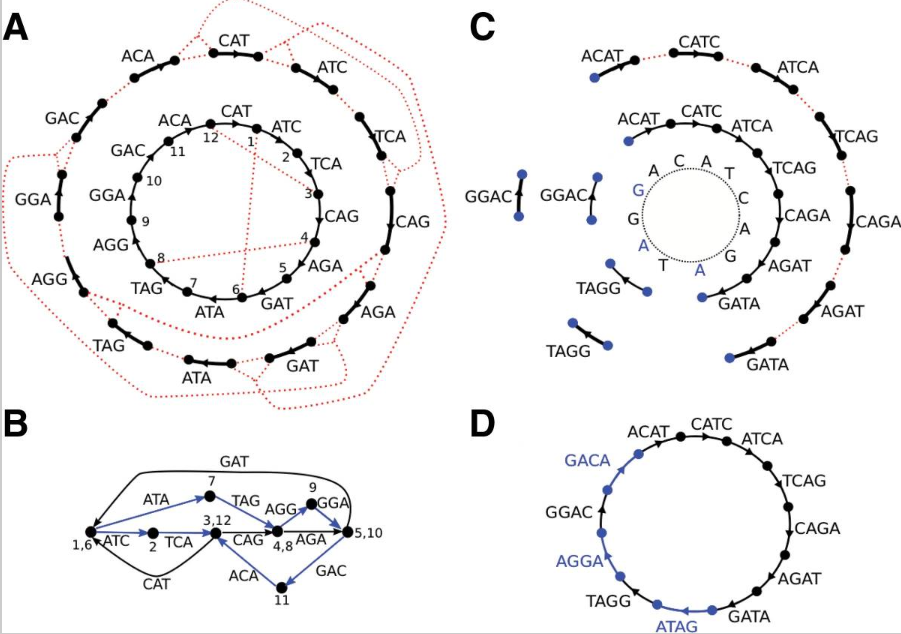

A de Bruijn graph is a compact representation based on short words ($k$-mers) that is ideal for high coverage, very short read (25–50 bp) data sets.
A critical stage in genome sequencing is the assembly of shotgun reads, or piecing together fragments randomly extracted from the sample, to form a set of contiguous sequences (contigs) representing the DNA in the sample.
- traditional approach: overlap-layout-consensus
overlap-layout-consensus approach (Batzoglou 2005), representing each read as a node and each detected overlap as an arc between the appropriate nodes.
Very short reads are not well suited to this traditional approach. Because of their length, they must be produced in large quantities and at greater coverage depths than traditional Sanger sequencing projects. The sheer number of reads makes the overlap graph, with one node per read, extremely large and lengthy to compute.
- de Bruijn graphs
The fundamental data structure in the de Bruijn graph is based on kmers, not reads, thus high redundancy is naturally handled by the graph without affecting the number of nodes.
The above descriptions are from Velvet, next cf. SPAdes. It seems that SPAdes improves on Velvet.
de Bruijn graphs
An $n$-mer is a string of length $n$. Given an $n$-mer $a=(a_1,a_2,…,a_n)$, define prefix $(a)=(a_1,…,a_{n-1})$, suffix$(a)=(a_2,…,a_{n})$.
Fix a positive integer $k$. For a set Reads of strings (thought of as the DNA sequencing reads over the alphabet {A, C, G, T}), let $N$ be the number of $k$-mers that occur in strings in Reads as substrings. Define the de Bruijn graph DB(Reads, $k$) as follows.
D1. Define an initial graph $G_0$ on $2N$ vertices. For each $k$-mer a that occurs in strings in Reads as a substring, introduce two new vertices $u$, $v$ and form an edge $u\rightarrow v$. Label the new edge by $a$, $u$ by prefix$(a)$, and v by suffix$(a)$. Note that we label edges by k-mers and vertices by $(k − 1)$-mers.
D2. Glue vertices of $G_0$ together if they have the same label.
- Multisized de Bruijn graphs
A vertex v in a graph G is called a hub if indegree(v) ≠ 1 or outdegree(v) ≠ 1. A directed path in G is called a hub-path(abbreviated h-path) if its starting and ending vertices are hubs and its intermediate vertices are not hubs.
In the de Bruijn graph DB(Reads, $k$), an h-path passing through $n$ vertices
$$(a_1,…,a_{k-1})\rightarrow (a_2,…,a_k)\rightarrow …\rightarrow (a_n,…,a_{n+k-2})$$
defines an $(n + k − 2)$-mer $(a_1,…,a_{n+k-2})$called a hub-read (abbreviated h-read). Substituting every h-path in DB(Reads, $k$) by a single edge labeled by its h-read results in a condensed de Bruijn graph.
We define Reads$k$ as the set of all h-reads in DB(Reads, $k$). Obviously, DB(Reads, $k$) = DB(Reads$k$, $k$).
We define the coverage of an edge in the de Bruijn graph DB(Reads, $k$) as the number of reads that contain the corresponding $k$-mer. The coverage of a path is defined as the average coverage of its edges.
The choice of $k$ affects the construction of the de Bruijn graph. Smaller values of $k$ collapse more repeats together, making the graph more tangled. Larger values of $k$ may fail to detect overlaps between reads, particularly in low coverage regions, making the graph more fragmented.
Given a positive integer $\delta < k$, we define Reads$k-\delta,k$ as the union of $\delta+1$ sets: reads$k$$\cup$reads$k-1$$\cup$…reads$k-\delta$
The multisized de Bruijn graph, DB(Reads, $k−\delta$, $k$) is defined as DB(Reads$k-\delta$, $k$). Figure shows the standard de Bruijn graphs DB(Reads, 3) (tangled) and DB(Reads, 4) (fragmented) as well as the multisized de Bruijn graph DB(Reads, 3, 4), which is neither tangled nor fragmented.

- Practical paired de Bruijn graphs: k-bimer adjustment
focus on a library with bireads having insert sizes…
- Euler circuit
Let C be an Eulerian cycle in a multigraph G. The distance between edges a and b in cycle C is defined as the number of edges between Start(a) and Start(b) in the cycle C (Start(e) and End(e) refer to starting and ending vertices of an edge e). We define the distance between a pair of h-paths as the distance between their h-edges. When cycle C (in a de Bruijn graph) corresponds to a genome, the distance between edges corresponds to the genomic distance.
biread,transformation等等看着太费劲了，暂时放一放
简单来讲，用reads的k-mer构建de Bruijn graph，然后找欧拉回路拼接genome
– SPAdes assembly 理论部分
References:
1.SPAdes: A New Genome Assembly Algorithm and Its Applications to Single-Cell Sequencing https://www.ncbi.nlm.nih.gov/pmc/articles/PMC3342519/
2.Velvet: Algorithms for de novo short read assembly
using de Bruijn graphs